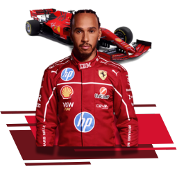
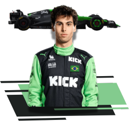
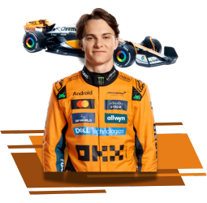

SOBRE NOSSO SITE
Este site foi criado por nós, alunos do curso de Desenvolvimento de Software Multiplataforma, na Fatec de Marília, São Paulo, com o objetivo de estudar e praticar HTML, CSS e JavaScript, além de apresentá-lo como projeto interdisciplinar. Além disso, nosso site tem a missão de informar sobre o mundo da Fórmula 1, trazendo notícias sobre as corridas, curiosidades sobre os circuitos, informações sobre os pilotos e suas trajetórias, além de relembrar grandes momentos e marcos históricos da categoria. Aqui, você encontrará desde análises detalhadas das provas até conteúdos sobre a evolução dos carros, estratégias das equipes e o impacto da F1 no automobilismo global.
FÓRMULA-1
É a categoria mais avançada do esporte a motor, que começou em 1950, e é regulamentada pela federação internacional do Automobilismo. a palavra "Fórmula" no nome se refere ao conjunto de regras que todos os carros dos corredores devem estar em conformidade.
você pode aprender mais acessando o site oficial do esporte
CORRIDAS
Cada corrida é chamada de GP, abreviação de Grand Prix — Grande Prêmio, no nosso idioma. Geralmente, a duração de um GP é de cerca de 2 horas. O objetivo é obviamente alcançar a linha de chegada antes dos outros corredores, depois de uma determinada quantidade de voltas. Cada circuito tem um número definido de voltas
.
Você pode conferir mais sobre clicando no link abaixo.
CORREDORES
Aqui você vai ver quem faz a magia da F1 acontecer, os corredores, você também podera ver sobre as equipes dos mesmos.


